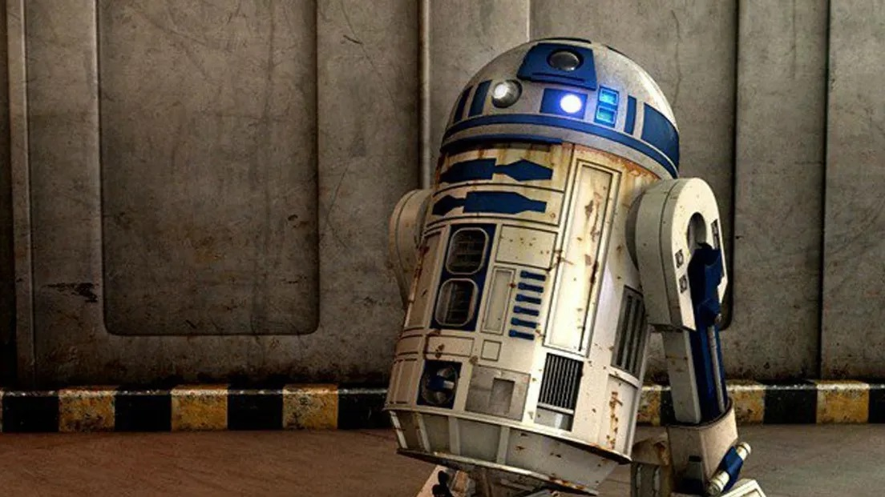
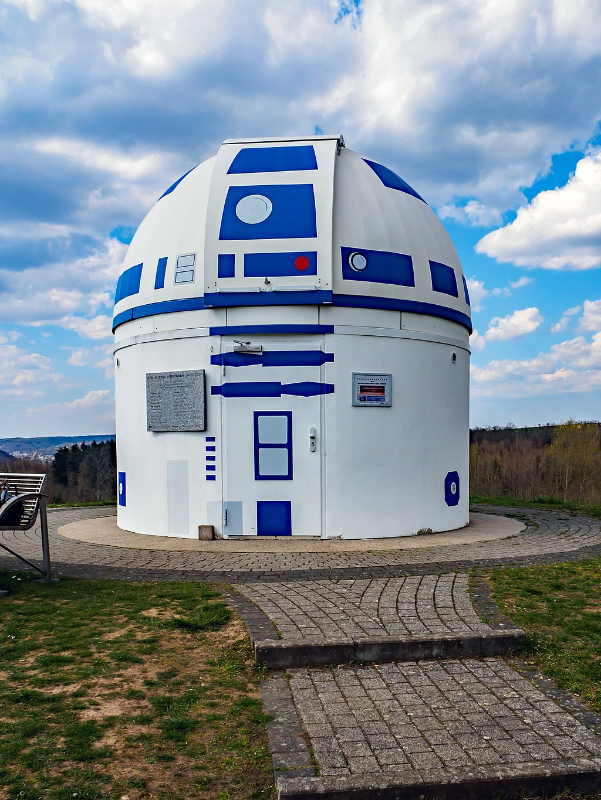

<html></html>
<head>
  <title>R2-D2</title>

  <link rel="stylesheet" href="style.css" />
</head>

<body>
  <h1>R2-D2</h1>

  <hr />

  <div class="card">
    <p>
      <strong>R2-D2</strong> (/ˌɑːr.tuːˈdiːtuː/) or
      <strong>Artoo-Detoo</strong> is a fictional robot character in the
      <a href="https://en.wikipedia.org/wiki/Star_Wars" target="_blank"
        ><em>Star Wars</em></a
      >
      franchise created by
      <a href="https://en.wikipedia.org/wiki/George_Lucas"
        ><strong>George Lucas</strong></a
      >
      . He has appeared in ten of the eleven theatrical Star Wars films to date,
      including every film in the "Skywalker Saga", which includes the original
      trilogy, the prequel trilogy and the sequel trilogy. At various points
      throughout the course of the films, R2, an astromech droid, is a friend to
      <a href="https://en.wikipedia.org/wiki/C-3PO" target="_blank">C-3PO</a>,
      <a href="https://en.wikipedia.org/wiki/Padm%C3%A9_Amidala">
        Padmé Amidala</a
      >,
      <a href="https://en.wikipedia.org/wiki/Darth_Vader">Anakin Skywalker</a> ,
      <a href="https://en.wikipedia.org/wiki/Princess_Leia">Leia Organa</a> ,
      <a href="https://en.wikipedia.org/wiki/Luke_Skywalker">Luke Skywalker</a>
      , and
      <a href="https://en.wikipedia.org/wiki/Obi-Wan_Kenobi">Obi-Wan Kenobi</a>
      . R2-D2 and his companion C-3PO are the only characters to appear in every
      theatrical Star Wars film, with the exception of
      <a
        href="https://en.wikipedia.org/wiki/Solo:_A_Star_Wars_Story"
        target="_blank"
        >Solo: A Star Wars Story (2018)</a
      >.
    </p>

    <p>
      English actor Kenny Baker played R2-D2 in all three original Star Wars
      films and received billing credit for the character in the prequel
      trilogy, where Baker's role was reduced as R2-D2 was portrayed mainly by
      radio controlled props and CGI models. In the sequel trilogy, Baker was
      credited as consultant for The Force Awakens; however, Jimmy Vee also
      co-performed the character in some scenes. Vee later took over the role
      beginning in The Last Jedi. In The Rise of Skywalker, puppeteers Hassan
      Taj and Lee Towersey perform the role of R2-D2, replacing Jimmy Vee, who
      had played the role in the previous two films. His sounds and vocal
      effects were created by sound designer Ben Burtt.
    </p>

    <p>
      R2-D2 was designed in artwork by Ralph McQuarrie, co-developed by John
      Stears and built by Peteric Engineering. The revised Empire Strikes Back
      droids had fibreglass shells built by Tony Dyson and his White Horse Toy
      Company.
    </p>
  </div>

  <br />

  <div>
    <table style="float: right; border-collapse: collapse" border="1">
      <tr>
        <th style="background-color: blanchedalmond" colspan="2">R2-D2</th>
      </tr>
      <tr>
        <td colspan="2" style="text-align: center">
          <a href="https://en.wikipedia.org/wiki/Star_Wars">Star Wars </a
          >character
        </td>
      </tr>

      <tr>
        <td colspan="2">
          
        </td>
      </tr>
      <tr>
        <td><strong>First appearance</strong></td>
        <td>Star Wars (1977)</td>
      </tr>
      <tr>
        <td><strong>Created by</strong></td>
        <td>George Lucas</td>
      </tr>
      <tr>
        <td><strong>Portrayed by </strong></td>
        <td>Kenny Baker</td>
      </tr>

      <tr>
        <td></td>
        <td>Deep Roy</td>
      </tr>

      <tr>
        <td></td>
        <td>Hassan Taj</td>
      </tr>
      <tr>
        <td></td>
        <td>Lee Towersey</td>
      </tr>
      <tr>
        <td></td>
        <td>Christine Galey</td>
      </tr>
      <tr>
        <td></td>
        <td>Jimmy Vee</td>
      </tr>
      <tr>
        <th style="background-color: blanchedalmond" colspan="2">
          In-universe information
        </th>
      </tr>

      <tr>
        <td><strong>Class</strong></td>
        <td>
          <a
            href="https://en.wikipedia.org/wiki/Droid_(Star_Wars)#Astromech_droid"
            >Astromech droid</a
          >
        </td>
      </tr>

      <tr>
        <td><strong>Affiliation</strong></td>
        <td>
          <a
            href="https://en.wikipedia.org/wiki/List_of_Star_Wars_planets_and_moons#Naboo"
            >Kingdom of Naboo</a
          >
        </td>
      </tr>
      <tr>
        <td></td>
        <td>
          <a href="https://en.wikipedia.org/wiki/Galactic_Empire_(Star_Wars)"
            >Galactic Empire</a
          >
        </td>
      </tr>

      <tr>
        <td></td>
        <td>
          <a href="https://en.wikipedia.org/wiki/Galactic_Republic"
            >Galactic Republic</a
          >
        </td>
      </tr>
      <tr>
        <td></td>
        <td>
          <a href="https://en.wikipedia.org/wiki/Rebel_Alliance"
            >Rebel Alliance</a
          >
        </td>
      </tr>
      <tr>
        <td></td>
        <td>
          <a href="https://en.wikipedia.org/wiki/Galactic_Republic#New_Republic"
            >New Republic</a
          >
        </td>
      </tr>
      <tr>
        <td></td>
        <td>
          <a href="https://en.wikipedia.org/wiki/Resistance_(Star_Wars)"
            >Resistance</a
          >
        </td>
      </tr>
      <tr>
        <td><strong>Homeworld</strong></td>
        <td>
          <a
            href="https://en.wikipedia.org/wiki/List_of_Star_Wars_planets_and_moons#Naboo"
            >Naboo</a
          >
        </td>
      </tr>
    </table>
  </div>

  <br />

  <h2>Design</h2>

  <hr />

  <div class="card1">
    <p>
      George Lucas's creation of R2-D2 was influenced by the peasant Matashichi
      from Akira Kurosawa's 1958 film The Hidden Fortress. Lucas and artist
      Ralph McQuarrie also drew inspiration from the robots Huey, Dewey, and
      Louie from Douglas Trumbull's 1972 film Silent Running.
    </p>

    <p>
      The name derives from when Lucas was making one of his earlier films,
      American Graffiti. Sound editor Walter Murch states that he is responsible
      for the utterance which sparked the name for the droid. Murch asked for
      Reel 2, Dialog Track 2, in the abbreviated form "R-2-D-2". Lucas, who was
      in the room and had dozed off while working on the script for Star Wars,
      momentarily woke when he heard the request and, after asking for
      clarification, stated that it was a "great name" before going back to
      writing his script.
    </p>

    <p>
      R2-D2 stands for Second Generation Robotic Droid Series-2, according to a
      Star Wars encyclopedia published after the release of the film Star Wars.
      Tony Dyson, owner of the special effects studio The White Horse Toy
      Company, was commissioned by special effects supervisor Brian Johnson to
      fabricate the revised mechanical design for The Empire Strikes Back,
      making several units operated by remote control. A number were used by
      Baker, and two were stunt double models made for the scene where the droid
      was shot from the swamp onto the shore on Dagobah.
    </p>
  </div>

  <h2>Appearances</h2>

  <hr />

  <h2>Original trilogy</h2>

  <div class="card">
    <h3><li>Star Wars</li></h3>

    <p>
      In Star Wars, R2-D2 and C-3PO (Anthony Daniels) are both introduced on
      board the Tantive IV, along with Princess Leia (Carrie Fisher) of
      Alderaan, when they are being pursued upon by Darth Vader (portrayed by
      David Prowse, voiced by James Earl Jones) aboard an Imperial Star
      Destroyer. Leia inserts into R2-D2 an information disc containing the
      plans for the Death Star battle station, and encodes a distress message on
      the droid's holographic projector. The droids then escape in a pod that
      crashes on Tatooine near Jedi Master Obi-Wan Kenobi's (Alec Guinness)
      desert abode.
    </p>

    <p>
      R2-D2 and C-3PO are then abducted by Jawas and bought by Owen (Phil Brown)
      and Beru Lars (Shelagh Fraser), uncle and aunt of Luke Skywalker (Mark
      Hamill). While Luke cleans the sand out of R2-D2's gears, he discovers a
      fragment of Leia's message, and removes the droid's restraining bolt to
      see more; once free of the bolt, R2 claims to have no knowledge of the
      message. That night, R2-D2 leaves the farm to seek out Obi-Wan. When Owen
      and Beru are killed by Imperial stormtroopers, Luke is forced to leave
      Tatooine with Obi-Wan, Han Solo (Harrison Ford), and Chewbacca (Peter
      Mayhew) on board the Millennium Falcon to deliver R2-D2 to the Rebel
      Alliance. On their arrival at Alderaan's co-ordinates, they are pulled in
      by the Death Star's tractor beam and are forced to land, but eventually
      rescue Princess Leia. After Vader kills Obi-Wan, the rest of the group
      escapes and delivers the Death Star plans to the Rebel Alliance. R2 later
      serves as Luke's droid during the attack on the station. R2-D2 is severely
      damaged during the battle, but is repaired before the ceremony at the end
      of the film.
    </p>

    <h3><li>The Empire Strikes Back</li></h3>

    <p>
      In The Empire Strikes Back, R2-D2 accompanies Luke to Dagobah, and later
      to Cloud City, where he helps to rescue and repair a heavily damaged C-3PO
      and to override city security computers. He also manages to reactivate the
      Millennium Falcon's hyperdrive, resulting in a last-minute escape from
      Imperial forces.
    </p>

    <h3><li>Return of the Jedi</li></h3>

    <p>
      In Return of the Jedi, R2-D2 plays a critical role in rescuing Luke, Leia,
      and Han from Jabba the Hutt. He later joins the Rebel strike team on
      Endor. He is badly damaged during the battle between the Imperial troops
      and the Rebels, but is repaired in time for the celebration marking the
      second Death Star's destruction and the fall of the Empire.
    </p>
  </div>

  <h2>Cultural influence</h2>

  <hr />
  <div class="card1">
    
    <p>
      R2-D2 was inducted into the Robot Hall of Fame in 2003 in Pittsburgh,
      Pennsylvania. A replica can be seen at the Carnegie Science Center in
      Pittsburgh. The Smithsonian Institution included R2-D2 in its list of 101
      Objects that Made America.In 2022 R2-D2 was surveyed as being the most
      popular movie robot in the United States.
    </p>

    <p>
      R2-D2 and C-3PO guest starred in a two episodes of Sesame Street in 1980.
      The two droids were featured as presenters at the 50th Academy Awards. The
      telescope dome of
      <a href="https://en.wikipedia.org/wiki/Zweibr%C3%BCcken_Observatory"
        >Zweibrücken Observatory</a
      >
      in Germany was repainted to resemble R2-D2 in 2018. Zweibrücken
      Observatory in 2019 In the Latin American Spanish dubbing of the Star Wars
      films, the name R2-D2 is pronounced as "Arturito" (Little Arthur), which
      sounds similar to the English pronunciation.
    </p>

    <p>
      In the Italian version of the original trilogy, R2-D2 was named "C1-P8".
      Anglicisms were not common in the Italian language during the 1970s and
      1980s, and the names of various characters were changed to be easier to
      pronounce and recognize for Italian speakers. Some of these changes were
      reverted in the dubbing of the prequel and sequel trilogies, where the
      original name R2-D2 was used instead.
    </p>

    <p>
      Around the same time that A New Hope was being shot, Ray Harryhausen had
      already created "Bubo" for the 1981 film Clash of the Titans. In the film,
      Bubo is a mechanical metal owl that flies heavily and communicates through
      whistles and tweets. Harryhausen denied a relation.
    </p>
  </div>
</body>
